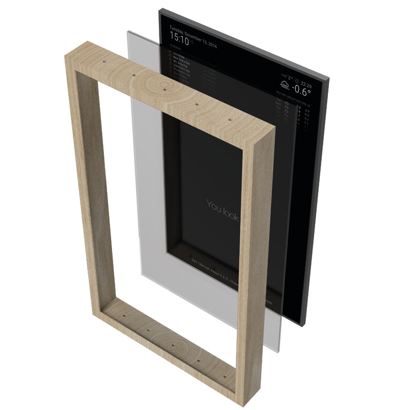

In her free time Brittney likes to use the skills she's learned to create fun projects. One of these projects was creating a magic mirror. A magic mirror is essentially a smart mirror, for example it can display the weather, time, calendar, news, social media updates, and much more. Brittney created the magic mirror by placing a mirror over an old TV she had. She then used a Raspberry Pi (A credit-card sized computer) to code everything that would appear on her mirror. After that she plugged the Raspberry Pi into the TV monitor. Finaly she paired an Echo Dot so that her mirror would be voice controlled.